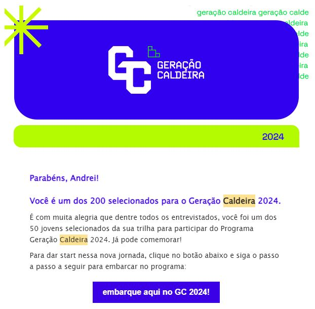
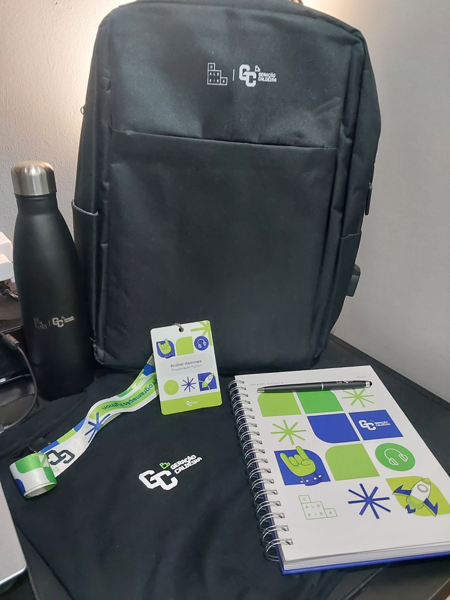
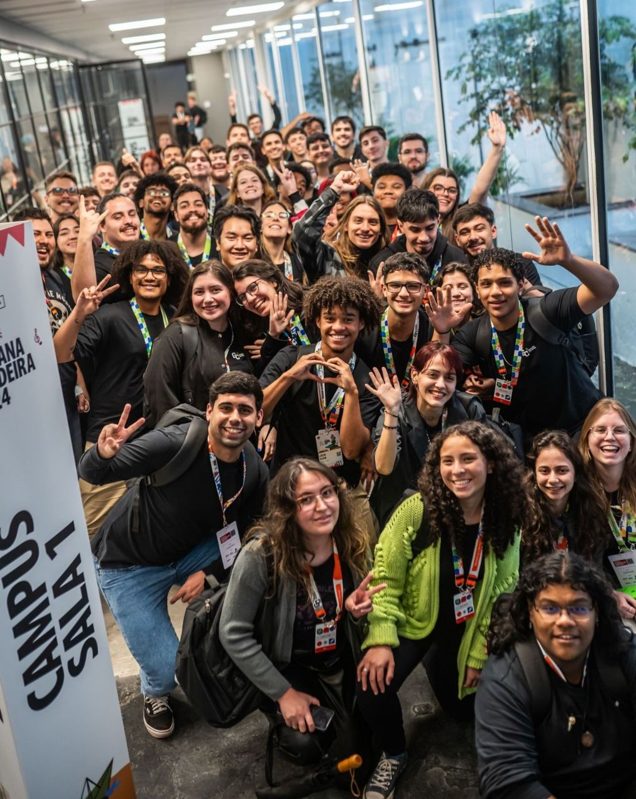
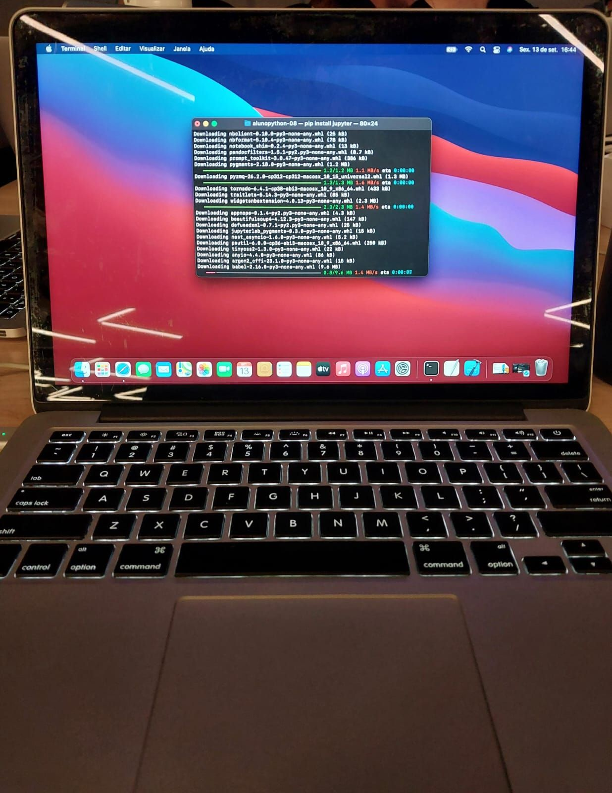
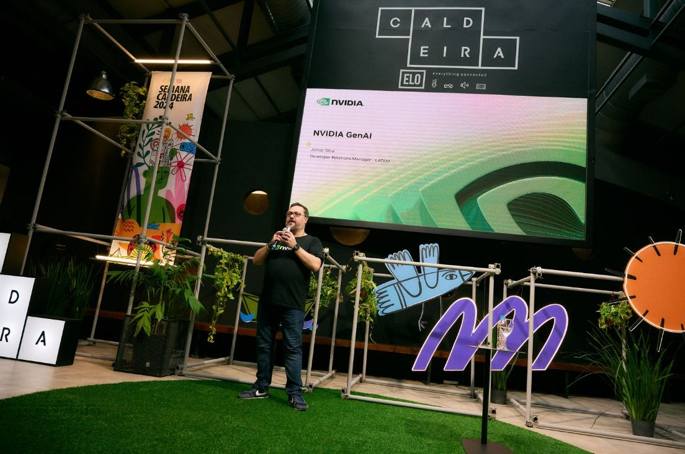
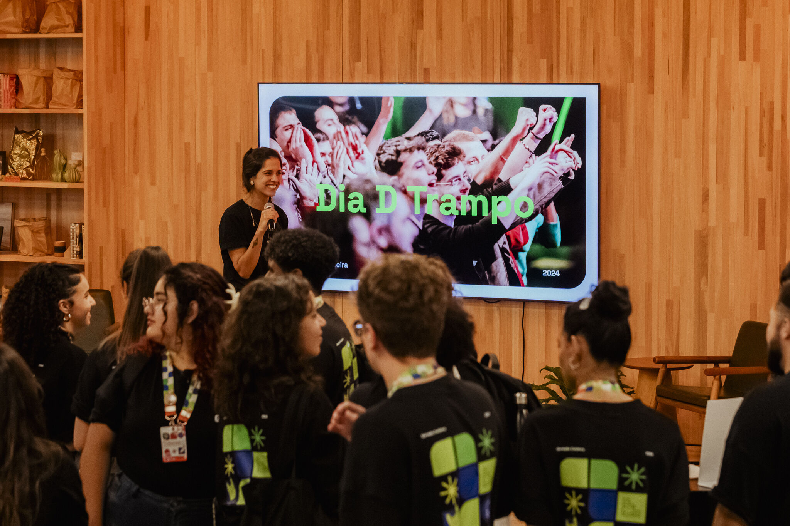
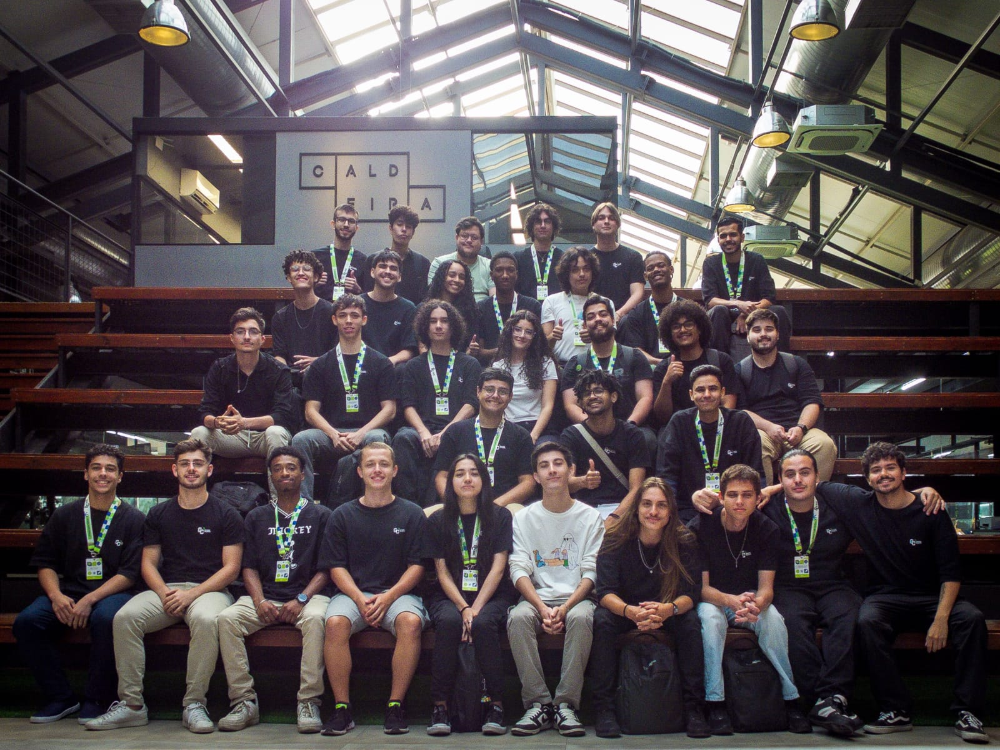
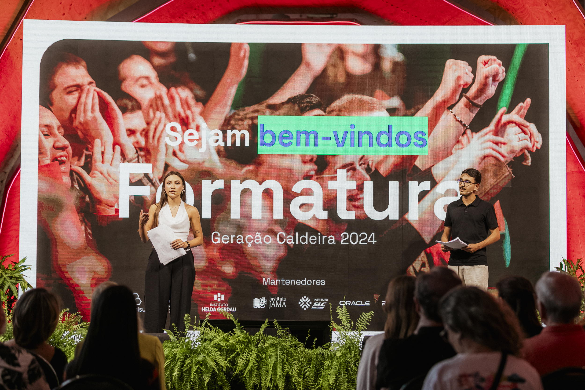

Minha jornada no Geração Caldeira 🚀
Um programa que transforma vidas através da tecnologia e inovação
O Geração Caldeira é uma iniciativa do Instituto Caldeira, um dos principais hubs de inovação do Brasil, localizado em Porto Alegre, Rio Grande do Sul. O programa tem como objetivo formar jovens talentos em tecnologia, inovação e empreendedorismo, preparando-os para os desafios do mercado de trabalho.
Em 2024, fui selecionado como um dos 200 finalistas do programa, uma experiência que mudou minha trajetória profissional. Durante o programa, mergulhei em estudos de Python, análise de dados e inteligência artificial, além de participar de mentorias e workshops com profissionais renomados.

O que é o Geração Caldeira? 🌟
O Geração Caldeira é um programa de formação intensiva que busca capacitar jovens para atuar em áreas de alta demanda no mercado de tecnologia. O programa seleciona jovens com potencial para se tornarem líderes em tecnologia e inovação.
O programa oferece:
- Formação em tecnologias emergentes
- Mentorias com profissionais experientes
- Desenvolvimento de projetos práticos
- Networking com o ecossistema de inovação
- Conexão com vagas no mercado de trabalho

O impacto coletivo do programa 🌱
O Geração Caldeira foi muito mais do que um programa de formação, foi uma experiência transformadora que me trouxe uma perspectiva de futuro. Além de me proporcionar ferramentas para crescer profissionalmente, o programa me possibilitou estar inserido num ambiente de oportunidades e a disposição de ferramentas para meu crescimento que eu não imaginava ter acesso.
Sou profundamente grato aos professores e mentores que me guiaram com tanto cuidado e dedicação. Eles criaram um espaço de aprendizado que vai além do conhecimento técnico – é um lugar onde a empatia, a colaboração e o afeto são tão importantes quanto o que aprendemos. Foi lá que conheci pessoas incríveis, que hoje fazem parte da minha jornada e com quem sei que vou viver muitas histórias e conquistas.
Viva os programas sociais que entendem que mudar o mundo não é sobre criar exceções, mas sobre garantir que mais pessoas tenham oportunidades reais, e que nenhuma delas precisa chegar lá sozinha.

Alguns dos Momentos Marcantes do Programa 🏆
Fase Online
Os primeiros quatro meses do programa aconteceram de forma remota, com alguns encontros presenciais e acesso à plataforma da Alura para trilhas educacionais. Durante esse período, o Rio Grande do Sul enfrentou uma de suas maiores tragédias, mas mesmo diante das adversidades, alunos e organizadores mantiveram o compromisso com o projeto. Entre 7,5 mil inscritos, 200 foram selecionados como finalistas, e eu tive o privilégio de estar entre eles.

Encontro com Jomar Silva, da Nvidia
Um dos momentos mais marcantes da semana Caldeira de 2024 foi o encontro com Jomar Silva, gerente de Relacionamento com Desenvolvedores para a América Latina na Nvidia. Sua palestra foi uma verdadeira aula sobre o futuro da tecnologia, especialmente no campo da inteligência artificial. Jomar não apenas compartilhou insights sobre o papel da Nvidia na criação e evolução da IA, mas também nos inspirou a pensar além das ferramentas que utilizamos, incentivando-nos a ser protagonistas na construção do futuro da inovação.
A palestra reforçou a importância de estar sempre atualizado e preparado para as mudanças rápidas do mercado de tecnologia. Além disso, tive a oportunidade, junto com meus colegas, de conversar diretamente com o Jomar após a apresentação. Esse momento de interação foi incrível, pois pude tirar dúvidas, discutir ideias e receber conselhos valiosos de um profissional que está na vanguarda da indústria.

Dia D Trampo
O Dia D Trampo foi um divisor de águas na minha jornada no Geração Caldeira, tive a oportunidade incrível de me conectar com empresas parceiras, em um evento que inverteu a dinâmica tradicional: as empresas se apresentaram para nós, buscando nossos talentos. Essa abordagem inovadora facilitou muito o match entre nossos objetivos e as oportunidades do mercado. 39 empresas participaram da feira de empregabilidade contando com uma abordagem inovadora. Algumas das empresas presentes no dia eram: Paim United Creators, Appmax, Sicredi, Randoncorp, SLC agrícula, Sebrae, Alura, Pucrs e outros grandes nomes. Foi graças a esse dia que consegui minha tão sonhada primeira vaga na área que eu queria entrar 😁

Projeto Final
No projeto final do programa, minha equipe analisou um conjunto de dados para identificar os fatores que mais influenciam o desenvolvimento da depressão. Analisamos dados como satisfação profissional, desempenho acadêmico e padrões de sono, buscando correlações com o quadro depressivo, influências e possível agravamento. Utilizando técnicas de análise de dados e storytelling, apresentamos nossos resultados a uma banca avaliadora.
Link do Repositório
Formatura
A formatura marcou o fim de uma jornada intensa e transformadora. Ao lado de colegas e mentores, celebrei cada aprendizado e desafio superado. Saí desse dia com gratidão e a certeza de que essa foi apenas a primeira etapa de uma trajetória de crescimento e impacto.

Saiba mais 🌐
Para mais informações sobre o Geração Caldeira, visite o site oficial
Confira também a matéria completa do GaúchaZH sobre a edição de 2024: Instituto Caldeira seleciona 200 jovens em programa que forma profissionais para áreas de tecnologia e inovação